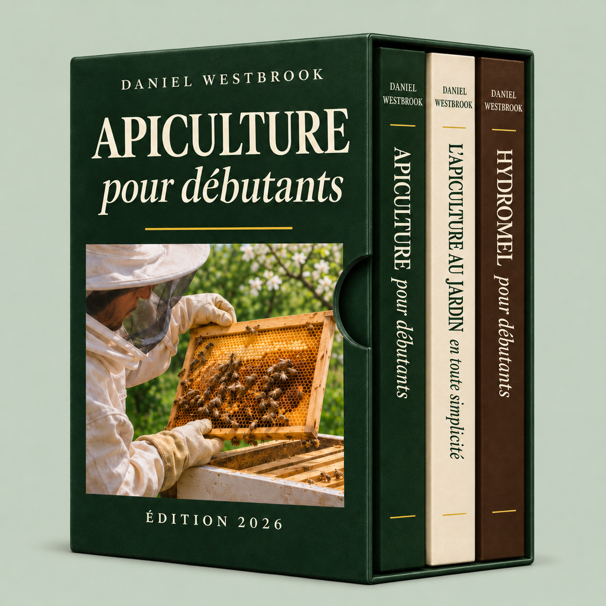

LA COLLECTION DE DANIEL WESTBROOK
De votre première colonie à votre propre miel.

Comprendre. Observer. Progresser.
VOTRE ESPACE MEMBRE
Votre aventure
Votre aventure
avec les abeilles
commence ici.
Bienvenue. Découvrez le monde des abeilles avec des connaissances qui vous accompagnent dès les premiers pas.
VOTRE BIBLIOTHÈQUE PERSONNELLE
Accéder à mon espace
Comprendre les bases. Installer un rucher au jardin. Découvrir la fabrication de l’hydromel.
Lisez les trois livres en ligne ou téléchargez les PDF.
- 3
- Livres
- 180
- pages à découvrir
- Votre rythme
- Pour débutants